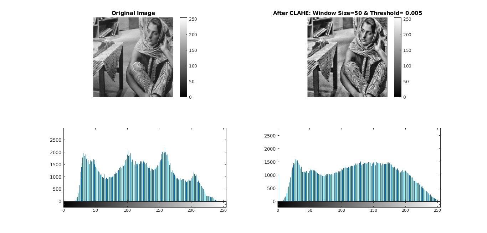

Question 2 Gray Level Transformations
Contents
Linear Contrast Stretching
The function myLinearContrastStretching(fname, path) implements contrast stretching by stretching the histogram of image over 0 to 255.
Both single channel ( Grayscale ) and three channel ( RGB ) images can be given as input image.
*The transformation function for each pixel is as follows: *
newValue = [(oldValue - minValue)/(maxValue - minValue) ]*255
Observations For Linear Contrast Strectching, if pixel values of image contains 0 and 255, then apllication of above function has no effect, because the denominator becomes 255 and we are multiplying by 255. Thus, its canceled. In such cases Linear Contrast Streching is ineffective.
Now, for ../data/church.png because the above observation holds true, therefore we see no effect. for RGB images, the calculation is done by passing via each channel.
tic; myLinearContrastStretching('barbara','../data/barbara.png'); % 1 myLinearContrastStretching('TEM','../data/TEM.png'); % 2 myLinearContrastStretching('canyon', '../data/canyon.png'); % 3 myLinearContrastStretching('church','../data/church.png'); % 4 myLinearContrastStretching('retina', '../data/retina.png') toc;
Histogram Equalization
For converting histogram of an Image to Uniform Distribution . The Pseudo code is:
For each channel of the image
channelHistogram = Calculate Histogram of (channel)
pmf = Calculate pmf of (channelHistogram)
cdf = Cumulative Sum(pmf)
For each pixel px in channel
new_px =cdf(px) * 255
End
Endobservation After applying on ../data/church.png, we can see that the building structure (window, bricks) of church and neighbouring buildings could be seen clearly.
Because Linear contrast streching is unreliable if the minimum and maximum pixel values are 0 and 255. Having no effect as a result.
Histogram Equilisation uses probability mass funtion. Normalization is nonlinear here, which spreads the area of pixels with high intensities, and compresses area of pixels with low intesity value.
Hence, Histogram Equilization is preferred over simple contrast stretching.
tic; myHE('barbara','../data/barbara.png',1); % 1 myHE('TEM','../data/TEM.png',1); % 2 myHE('canyon', '../data/canyon.png',1); % 3 myHE('church','../data/church.png',1); % 4 myHE('retina', '../data/retina.png',1) % 5 toc;

Histogram Matching
Sometimes, we might not want to do Histogram Equilisation, instead match the histogram of given image to the histogram of a reference image(NOT uniform).
Observation For ../data/retina.png The difference b/w histogram equilized and histogram matching output can be observed from the following plottings. Histogram Equirization results in uniform intensities, which in this cases results in clear veins view, but the other regions are affected. Now, in case of Histogram matching, which could be required for standard viewing of image in some cases e.g Medical, We get resulting image to be closer to the reference image.
tic; myHM('../data/retina.png', '../data/retinaMask.png', '../data/retinaRef.png', '../data/retinaRefMask.png'); toc;
Adaptive Histogram Equilization
AHE is localised adaptive equilization around a pixel. Region around the pixel is controlled by window size. As the window size gets lower the low intensities are enhanced, this also results in enhancement of noise.
Algorithm: (ref: slides by Prof. Suyash)
Let windows size = n
For each pixel p
construct window of size nxn
perform histogram equilization within that window
1) computer histogram within that window
2) computer the CDF within window
3) Map intensity of center pixel "p" based on CDFtic; myAHE(5,'barbara','../data/barbara.png'); % 1 myAHE(50,'barbara','../data/barbara.png'); % 1 myAHE(200,'barbara','../data/barbara.png'); % 1 myAHE(5,'TEM','../data/TEM.png'); % 2 myAHE(50,'TEM','../data/TEM.png'); % 2 myAHE(200,'TEM','../data/TEM.png'); % 2 myAHE(5,'canyon', '../data/canyon.png'); % 3 myAHE(50,'canyon', '../data/canyon.png'); % 3 myAHE(200,'canyon', '../data/canyon.png'); % 3 toc;

Contrast Limited Adaptive Histogram Equilization
Source: slides Prof. Suyash's
CLAHE is different from AHE in the sense that the amplification of pixel
is limited by:
1) Clip the histogram at predefined value
2) Redistribute the mass uniformly throughout the range
3) then,Compute the CDFtic; myCLAHE(.01, 50 ,'barbara','../data/barbara.png'); % 1 myCLAHE(.005, 50 ,'barbara','../data/barbara.png'); % 1 myCLAHE(.01, 50 ,'TEM','../data/TEM.png'); % 2 myCLAHE(.005, 50 ,'TEM','../data/TEM.png'); % 2 myCLAHE(.01, 50,'canyon', '../data/canyon.png'); % 3 myCLAHE(.005,50,'canyon', '../data/canyon.png'); % 3 toc;